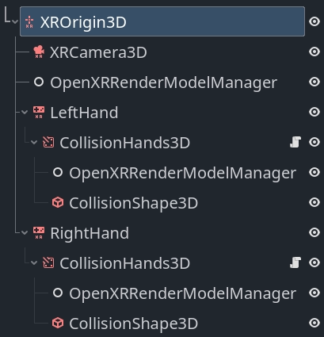

OpenXR Render Models
A cornerstone of OpenXR's API design is being as platform agnostic as possible. A great example of this is OpenXR's action map system where XR runtimes have to support core interaction profiles to fall back on, if no interaction profile exists for the hardware being used. This ensures that OpenXR applications keep functioning even when used on hardware that didn't exist when the application was released, or that the developers of the application did not have access too.
A consequence of this is that the application developer doesn't know with any certainty what hardware is being used, as the XR runtime could be mimicking other hardware. The application developer thus can't show anything in relation to the actual hardware used, the most common use case being showing the controllers the user is currently holding.
Showing the correct controller models and having these models correctly positioned is important to a proper sense of immersion.
This is where OpenXR's render models API comes in. This API allows us to query the XR runtime for 3D assets that are correct for the physical hardware being used. The API also allows us to query the position of this hardware within the tracking volume and the correct positioning of subcomponents of this hardware.
For instance, we can correctly position and animate the trigger or show buttons being pressed.
For those runtimes that support the controller data source for hand tracking , we can also correctly position the user's fingers and hand according to the shape of the controller. Do note that this works in combination with the hand joints motion range extension to prevent clipping of the fingers.
OpenXR Render models node
The OpenXRRenderModelManager node can be used to automate most of the render models functionality. This node keeps track of the active render models currently made available by the XR runtime.
It will create child nodes for each active render model resulting in that render model being displayed.
This node must have an XROrigin3D node as an ancestor.
If tracker is set to Any our node will show all render models
currently being tracked. In this scenario this node must be a direct
child of our XROrigin3D node.
If tracker is set to None set our node will only show render
models for which no tracker has been identified. In this scenario this
node must also be a direct child of our
XROrigin3D node.
If tracker is set to Left Hand or Right Hand our node will
only show render models related to our left or right hand respectively.
In this scenario, our node can be placed deeper in the scene tree.
Warning
For most XR runtimes this means the render model represents a controller that is actually being held by the user but this is not a guarantee. Some XR runtimes will always set the tracker to either the left or right hand even if the controller is not currently held but is being tracked. You should always test this as this will lead to unwanted behavior.
In this scenario we can also specify an action for a pose in the action map
by setting the make_local_to_pose property to the pose action.
Use this in combination with an XRController3D
node that is using the same pose and you can now add a layer that allows
you to deviate from the tracked position of both your controller and the
related render model (see example below).
Note
Combining the above with hand tracking does introduce the problem that hand tracking is completely independent from the action map system. You will need to combine the hand tracking and controller tracking poses to properly offset the render models.
This falls beyond the scope of this documentation.
Render model manager example
You can download our render models demo which implements the setup described below.

In this setup we find an OpenXRRenderModelManager
node directly underneath our XROrigin3D node.
On this node our target property is set to None set and will handle
showing all render models that are currently not related to our left or
right hand controllers.
We then see the same setup for our left and right hand so we'll focus on just the left hand.
We have an XRController3D that will track the location of our hand.
Note
We are using the grip pose in this example. The palm pose is
arguably more suitable and predictable however it is not supported
by all XR runtimes. See the hand tracking demo project for a
solution to switching between these poses based on what is supported.
As a child of the node we have an AnimatableBody3D node that follows the tracked location of the hand but will interact with physics objects to stop the player's hand from going through walls etc. This node has a collision shape that encapsulates the hand.
Note
It is important to set the physics priority so that this logic runs after any physics logic that moves the XROrigin3D node or the hand will lag a frame behind.
The script below shows a basic implementation for this that you can build upon.
class_name CollisionHands3D
extends AnimatableBody3D
func _ready():
# Make sure these are set correctly.
top_level = true
sync_to_physics = false
process_physics_priority = -90
func _physics_process(_delta):
# Follow our parent node around.
var dest_transform = get_parent().global_transform
# We just apply rotation for this example.
global_basis = dest_transform.basis
# Attempt to move to where our tracked hand is.
move_and_collide(dest_transform.origin - global_position)
Finally we see another OpenXRRenderModelManager
node, this one with target set to the appropriate hand and
make_local_to_pose set to the correct pose.
This will ensure that the render models related to this hand are properly
shown and offset if our collision handler has altered the location.
Render model node
The OpenXRRenderModel node implements all the logic to display and position a given render model provided by the render models API.
Instances of this node are added by the render model manager node we used up above but you can interact with these directly if you wish.
Whenever Godot obtains information about a new render model an RID is created to reference that render model.
By assigning that RID to the render_model property on this node,
the node will start displaying the render model and manage both the
transform that places the render model in the correct place and
animates all the sub objects.
The get_top_level_path function will return the top level path
associated with this render model. This will point to either the
left or right hand. As the top level path can be set or cleared
depending on whether the user picks up, or puts down, the controller
you can connect to the render_model_top_level_path_changes signal
and react to these changes.
Depending on your setup of the OpenXRRenderModelManager nodes, render models will be removed or added as their top level path changes.
Backend access
The nodes we've detailed out above handle all the display logic for us but it is possible to interact with the data that drives this directly and create your own implementation.
For this you can access the OpenXRRenderModelExtension singleton.
This object also lets you query whether render models are
supported and enabled on the device currently being used by
calling the is_active function on this object.
The built-in logic implements the interaction render model API that lists all render models related to controllers and similar devices that are present in the action map. It will automatically create and remove render model entities that are exposed through this API.
As other extensions become available these can be implemented
in a GDExtension plugin. Such a plugin can call
render_model_create and render_model_destroy to
create the object that will provide access to that render
model through the core render models API.
You should not destroy a render model outside of this logic.
You can connect to the render_model_added and
render_model_removed signals to be informed when new render
models are added or removed.
The core methods for working with this API are listed below:
Function |
Description |
|---|---|
render_model_get_all |
Provides an array of RIDs for all render models that are being tracked. |
render_model_new_scene_instance |
Provides a new scene that contains all meshes needed to display the render model. |
render_model_get_subaction_paths |
Provides a list of subaction paths from your action map related to this render mode. |
render_model_get_top_level_path |
Returns the top level path associated with this
render model (if any).
Use the |
render_model_get_confidence |
Returns the tracking confidence for the tracking data for this render model. |
render_model_get_root_transform |
Returns the root transform for this render model within our current reference space. This can be used to place the render model in space. |
render_model_get_animatable_node_count |
Returns the number of nodes in our render model scene that can be animated |
render_model_get_animatable_node_name |
Returns the name of the node that we can animate. Note that this node can be any number of levels deep within the scene. |
render_model_is_animatable_node_visible |
Returns true if this animatable node should be visible |
render_model_get_animatable_node_transform |
Returns the transform for this animatable node. This is a local transform that can be directly applied. |